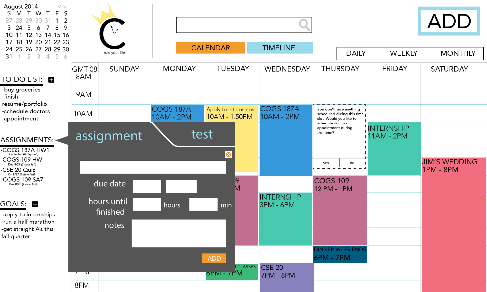
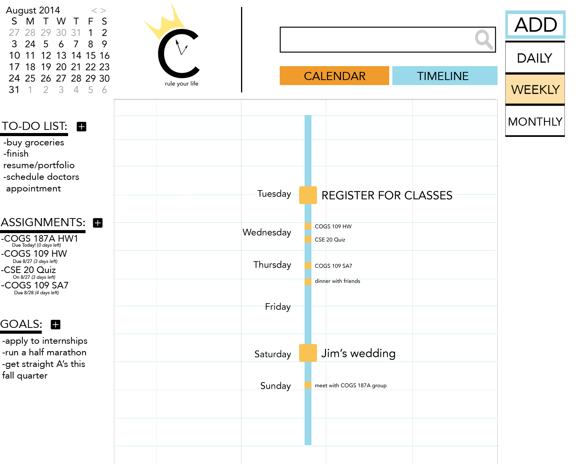
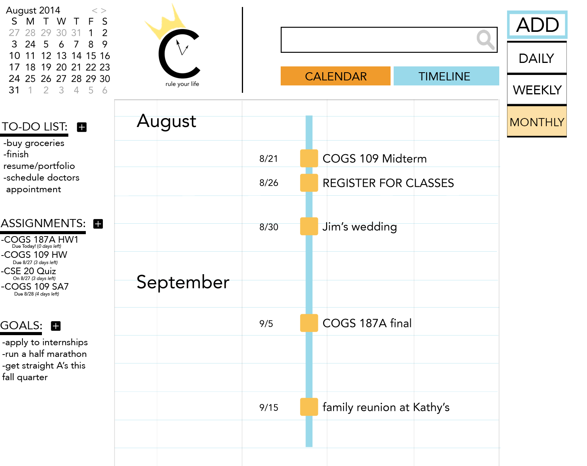

CROWN
Students also often struggle with managing different aspects of their lives and wasting their free time, thinking there is nothing they need to work on. Students also lack the motivation to keep working hard in their studies, because they cannot see or even remember their end goal. How can students be more effective with their time to acheive their goals?
CROWN is an interactive goal-based web calendar where users can set their long-term and short-term goals that they are passionate about.
Our motivation for CROWN is for students to effectively maximize their time to fulfill their goals, and essentially to make the important, urgent.
DURATION: August 2014 - September 2014
ROLE: UX / UI Designer & Front-End Developer
TOOLS: Contextual Inquiry, Ethnographic Studies, Adobe Creative Suite, Front End Developing (HTML, CSS, JS/JQuery), Storyboarding, Wireframing, Prototyping, Work Flow Modelling
DESCRIPTION: goal-based calendar to maximize time so students can fulfill their goals
COLLABORATORS: Kaitlin Garriott, Nick Gibson, Michael Lee, Melinda Chu
DELIVERABLES: Final Presentation | Website
THE PROCESS
WHY GOALS? Studies have shown that people need to believe and be passionate in what they do.
user research, wireframing, lo-fi & hi-fi prototyping, storyboarding, user flow, logo design & branding, scientific research


- add long term goals (life-long dream of becoming a doctor)
- add short term goals (training to run a marathon)
- automatic reminders of goals for motivation
- suggestions of slots of free time to work on goals to maximize free time.
(You don't have anything scheduled during this slot! Would you like to apply to internships during this time?)
- add long term goals (life-long dream of becoming a doctor)
- add short term goals (training to run a marathon)
- automatic reminders of goals for motivation
- suggestions of slots of free time to work on goals to maximize free time.
(You don't have anything scheduled during this slot! Would you like to apply to internships during this time?)
- add CROWN's suggestions to know and plan to work on goal during suggested time period

- add assignments & tests as a reminder
- input the guessed amount of time needed to study for the test
- automatic suggestions on when to start studying based on free time and due date
WHY: Students are often cognitively overloaded with the number of things they are involved in. The due dates and test dates often get muddled in the midst of everything, so students often don't start their assignments early enough due to the fact that they can't remember the dates of all their assignments and tests.


WHY: We noticed that the traditional calendar view does not differentiate between important (exams and weddings) and less important events (repeating classes). However, important events should be given more attention and time (cognitive effort) and are often more urgent. The point of the timeline view is for a different time visualization and for behavior change. The timeline view offers a new and quick way to see how close or far apart events are, indicating whether or not the student needs to make a decision in light of knowing how many important events are approaching. Therefore, CROWN offers the timeline view for each student's personal calendar, which is a new way to visually interpret time based on priority and importance.
During the course of conceptualizing and making this website, I personally learned Adobe Photoshop and Illustrator, as well as HTML, CSS, and Javascript / Jquery in the span of two weeks. The first 3 weeks were spent conceptualizing and prototyping our ideas and designs, while gaining user feedback and learning usability and information architecture concepts, and the last two weeks were spent coding the website. I personally coded the HTML and CSS of the calendar page and timeline page, and coded the JS so that the user can add to their to-do list, assignments / tests, goals, and the events. This is my first website, and despite a high learning curve due to the complexity of our project and the time constraints, I started to fall in love with web design during this project, giving me another potential path for the future. This experience was also rewarding because we successfully conceptualize ideas based on psychological studies for motivation and behavior change, which excites me to see Psychology and research used in the realm of Human-Computer Interaction. Our timeline view was also extremely rewarding, because first, it was a COMPLETELY new way of visualizing a personal calendar that no one had thought of before. Secondly, this was a complex idea in the realm of Cognitive Science, combining information visualization and time, so we decided to continue to explore this realm further by continuing it in the next quarter.